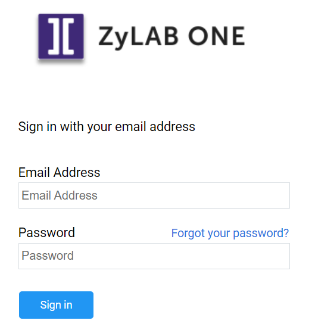
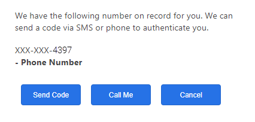

Inloggen
De ZyLAB ONE eDiscovery software is volledig web-based, dit houdt in dat alles wordt gedaan via uw internet browser (Internet Explorer, Chrome, Firefox etc.). Er zijn een of meer accounts aangemaakt voor uw organisatie door de beheerder. Om via de browser in te kunnen loggen heeft u de correcte weblink nodig voor uw organisatie. Deze kunt u vinden in uw registratiemail. Bent u de link kwijt? Vraag deze dan op bij uw systeembeheerder of bij ZyLAB.
Heeft u nog geen account? Zie het topic Account aanmaken hoe u een account kan aanmaken of aanvragen.
- Ga naar uw ZyLAB ONE website. Als u het webadres niet weet, neem dan contact op met uw beheerder. Wij raden u aan om van het webadres een bladwijzer te maken of om de URL ergens op te slaan.
-
Log in met uw gebruikersnaam en wachtwoord. Als u uw gebruikersnaam en wachtwoord niet weet, neem dan contact op met uw beheerder.

- Nadat u op Sign in heeft geklikt, dient u uw login poging the verifieren door middel van de tweestaps-verificatie. Door op Send Code te drukken, ontvangt u een sms met een code op uw mobiel. Deze kunt u vervolgens invoeren op de pagina om in te loggen.
